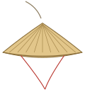
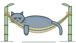
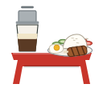

I write software for retail data at DoorDash. Before that I was a chef in my family's restaurant. Come in, I'll show you around.
Press a tag and I'll tell you that part.
1
22003
Kiên Giang
Dec 2018
Taylors
2021
USC
2025
DoorDash
Press a tag and I'll tell you that part.
I write software for retail data at DoorDash. Before that I was a chef in my family's restaurant. Come in, I'll show you around.
Status Still growing


4